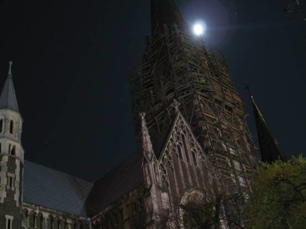

ВАРТІСТЬ: 95 ГРН
ТРИВАЛІСТЬ ЕКСКУРСІЇ: 2 ГОД.
Чому треба відвідати пішохідну екскурсію “Містичний Львів”?
 Пориньте у стародавні часи та відчуйте себе частиною історії Львова на театралізованій екскурсії «Містичний Львів». Професійні актори у костюмах персонажів стародавнього Львова допоможуть вам здійснити подорож у часі та дізнатися чому Львів називається на честь сина Данила Галицького, чому комендант Порохової вежі залишився охороняти місто назавжди, хто такий господар Томша і чому його стратили у Львові, що шукає львівський кат, коли бродить нічними вулицями Львова? Ввечері при світлі ліхтарів та смолоскипів розгадайте ці та інші загадки.
Пориньте у легенди Львова!
Пориньте у стародавні часи та відчуйте себе частиною історії Львова на театралізованій екскурсії «Містичний Львів». Професійні актори у костюмах персонажів стародавнього Львова допоможуть вам здійснити подорож у часі та дізнатися чому Львів називається на честь сина Данила Галицького, чому комендант Порохової вежі залишився охороняти місто назавжди, хто такий господар Томша і чому його стратили у Львові, що шукає львівський кат, коли бродить нічними вулицями Львова? Ввечері при світлі ліхтарів та смолоскипів розгадайте ці та інші загадки.
Пориньте у легенди Львова!
Де і коли?
Вартість екскурсії в збірній групі (дорослий/дитячий) — 95/75 грн.
Екскурсія проводиться у п’ятницю, суботу та неділю.
Вартість індивідуальної екскурсії — 500 грн. (для кількості від 1 до 5 осіб)*.
Тривалість екскурсії — 2 год.
Час і місце зустрічі — 21:00, площа Ринок, 19.
* В період травневих та новорічно-різдвяних свят може змінитись .
ДЛЯ ЗАМОВЛЕННЯ ЕКСКУРСІЇ ДЗВОНІТЬ ЗА ТЕЛ: +38 (067) 243-26-26
Пориньте у стародавні часи та відчуйте себе частиною історії Львова на театралізованій екскурсії «Містичний Львів». Професійні актори у костюмах персонажів стародавнього Львова допоможуть вам здійснити подорож у часі та дізнатися чому Львів називається на честь сина Данила Галицького, чому комендант Порохової вежі залишився охороняти місто назавжди, хто такий господар Томша і чому його стратили у Львові, що шукає львівський кат, коли бродить нічними вулицями Львова? Ввечері при світлі ліхтарів та смолоскипів розгадайте ці та інші загадки.
Пориньте у легенди Львова! Де і коли?
Вартість екскурсії в збірній групі (дорослий/дитячий) — 95/75 грн.
Екскурсія проводиться у п’ятницю, суботу та неділю.
Вартість індивідуальної екскурсії — 500 грн. (для кількості від 1 до 5 осіб)*.
Тривалість екскурсії — 2 год.
Час і місце зустрічі — 21:00, площа Ринок, 19.
* В період травневих та новорічно-різдвяних свят може змінитись .
ДЛЯ ЗАМОВЛЕННЯ ЕКСКУРСІЇ ДЗВОНІТЬ ЗА ТЕЛ: +38 (067) 243-26-26